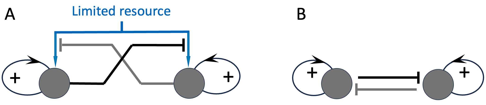
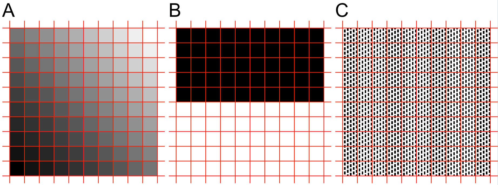
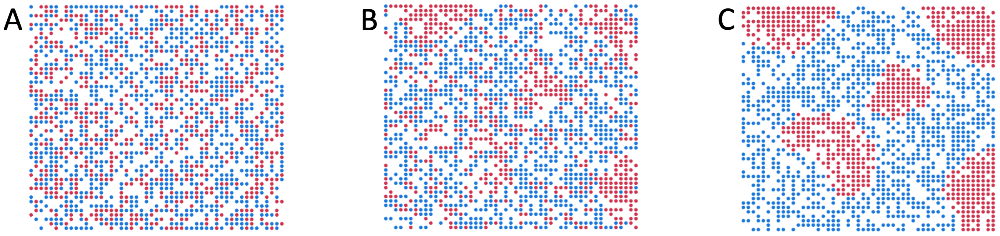
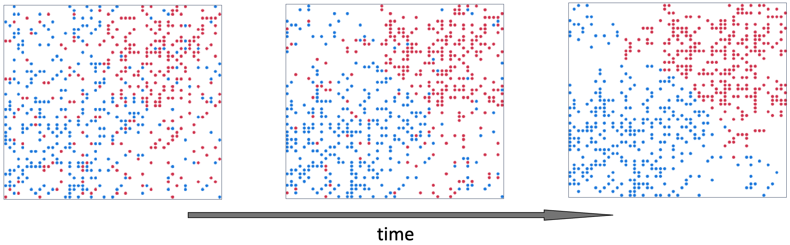
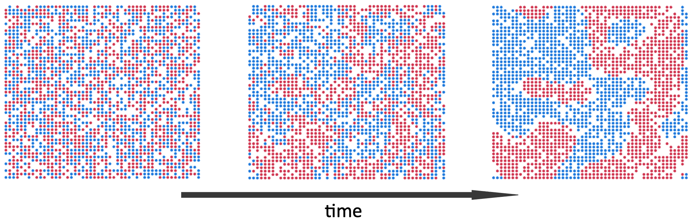
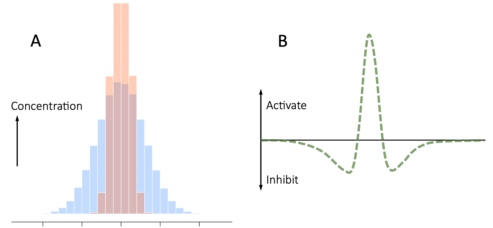
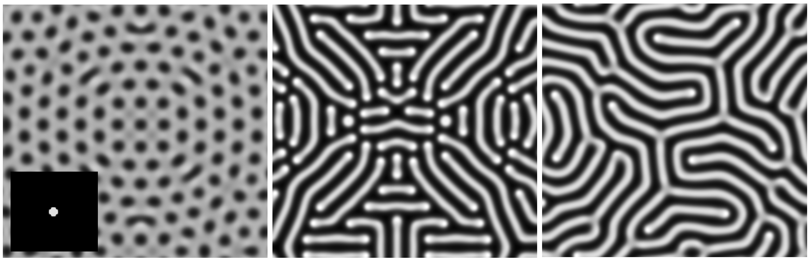
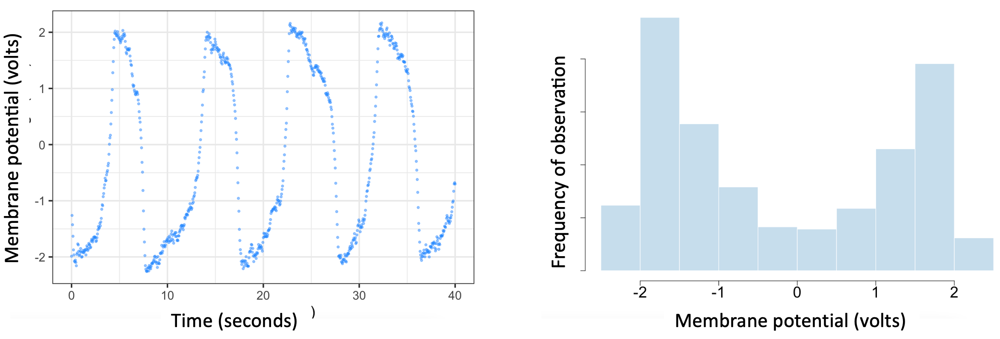
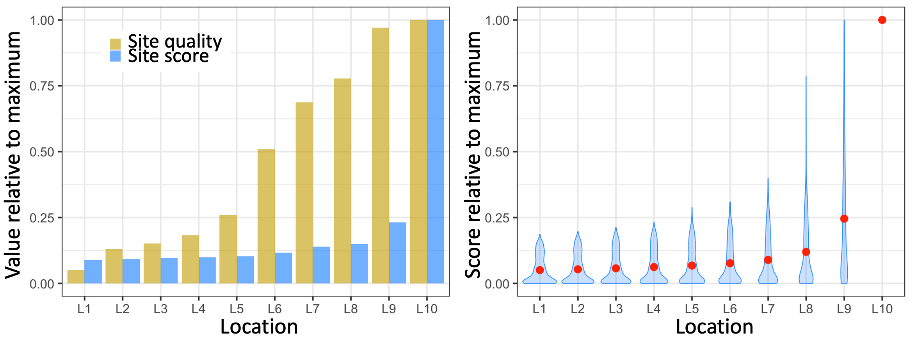

5 Polarization as a Single Self-Organizing Principle
Chapter 4 introduced the notion that competition for limited resources among entities with self-reinforcing feedback loops can create RAP. This chapter argues that competition for limited resources arises naturally all the time. But first, we need a more precise definition of “competition for limited resources”.
A resource in the context of this book is anything that is consumed by Human Systems. Energy-sources such as oil, gas, and electricity are resources. But so are ideas, knowledge, manpower, manufactured goods, and so on. This is a very inclusive definition, and makes it doubly important to consider what constitutes a limited resource.
Although the total amount of physical materials on earth is fundamentally limited, one could argue that relative to human needs, many resources like air, water, sunlight, etc. are in effect unlimited. Also, non-physical resources such as ideas can be used without depleting them, so in effect, their availability is unlimited. However, costs associated with using any resource 36 limit the availability of both physical and non-physical resources at affordable prices because Western, free-market economies always balance supply and demand. So, in practical terms, all resources 37 will only be available at acceptable prices in limited quantities.
Finally, in the context of “limited resources”, competition also has a special meaning. Specifically, I assume that the parties to the competition do not have alternative cost-effective means of satisfying their needs. In other words, the competitors depend on the resource for their growth and long-term survival. In that case, competition for a limited resource becomes the same as mutual inhibition: each party will grow through positive feedback to the extent that it is not inhibited by the other party (or parties). Figure 5.1 shows the full system and its schematic summary.

Figure 5.1. Competition for limited resources, and its equivalence to mutual inhibition. Panel A shows the full model, and Panel B the reduced mutual-inhibition version of the model.
I want to take the opportunity to clarify one more point here. Phenomena such as inequality, and polarization – or more generally pattern formation – occur in specific dimensions and at specific scales. The first point is self-evident, for example, a community may be highly unequal economically, or polarized politically, but not in terms of religion or ethnicity. In contrast, the notion that polarization happens at a particular scale has often led to much debate and confusion.
For a start, dictionary definitions of the word “pattern” are often circular. A pattern is defined as a detectable/notable amount of non-randomness in a quantity of interest. Randomness on the other hand is defined as a lack of any pattern. To avoid this circularity, let’s define a uniformly random quantity as a collection of values with the property that knowing any subset of the values does not improve our ability to predict the remaining values. With randomness defined in this way, we can now define a pattern as any departure from complete unpredictability. A pattern can be weak (a barely detectable deviation from randomness), or strong (highly predictable).
Figure 5.2 shows three example patterns. In panel A, the colors of cells in a 10x10 grid (red lines) vary gradually from pure black at the bottom-left to pure white at the top-right. There is a distinct pattern here, but no polarization. Panel B shows a light-dark pattern that is also polarized in terms of the grayscale values of the grid cells (either pure white or pure black, with few values in between). Panel C has the same numbers of black and white pixels as Panel B, but the average grayscale value of each of grid cells is halfway between black and white. So at the scale of grid-cells, there is no pattern in Panel C. On the other hand, if we zoom into one cell in Panel C, we see a clear checkerboard pattern with polarized back and white pixel values.

Figure 5.2. Three types of patterns. A Graded. B Polarized. C Fine grain polarization that is averaged out if we only consider a 10x10 grid of cells (indicated by the red lines).
Analyses of inequality and polarization data are carried out at many different scales (e.g. neighborhood, county, and state), and a sharply delineated pattern at one scale can be absent or even contradicted at other scales. This phenomenon motivates gerrymandering of election boundaries, and partisan interpretations of news and data. I will not belabor the point further here, but in all the discussions that follow, keep in mind that pattern formation and polarization happen at a particular scale.
To support my claim that polarization is a self-organizing phenomenon, below, I review the key mechanisms by which polarized patterns emerge naturally as a result of interactions within a variety of systems.
5.0.1 Pattern formation through preferential attachment
In May 1969, the future Nobel-prize-winning economist Thomas Schelling gave a presentation at the Annual Meeting of the American Economic Association that shocked many 1. Using just a few cleverly-formulated, hand-drawn diagrams, he showed that relatively small individual preferences could result in remarkable patterns of like-minded people clumping together.
The specific example Schelling presented was about the housing choices of white and black Americans, and what happens if each group has just a slight preference for same-race neighbors. Example simulations of Schelling’s model are shown in Figure 5.3. The exact segregation patterns that arise vary depending on the model’s details, but the broad-brush findings are consistent across simulation runs and model parameters. “Alike” people start to clump together, forming distinct clusters over time.

Figure 5.3. Schelling’s segregation model. The grid of points represents locations of houses in a neighborhood. Red and blue dots represent white and black people respectively. At each simulation step, people stay where they are if they are happy with their neighbors, or move to a randomly-selected empty (white) location if they are unhappy. For this illustrative simulation, a person was considered happy in their location if at least 45% of their neighbors were of the same race, and neighbors are defined as people no more than 3 cells away on the grid. Panel A shows the simulation starting point, with two equal-size groups distributed randomly on the grid. Panel B shows a short time after the start of the simulation. Note some same-color clumps are already forming. These will act as seeds for further clumping over time (panel C).
While Schelling’s paper focused on housing segregation, the underlying mechanism can also explain how established inequalities persist. For example, suppose the top executive posts in most large corporations happen to be occupied by white men. If these executives have a slight preference for interacting with people like themselves, then as candidates come up for promotions and job interviews, a larger proportion of candidates who are like the existing executives will be awarded top positions. Keep in mind that the bias at play here need not be large or conscious. Over time, Schelling’s mechanism will fill nearly all top-level positions with more white men.
Figure 5.4 presents an example simulation. Here, the red dots represent white male executives. The blue dots can represent women or non-white job applicants. Let’s say the region at the top-right of the simulation space represents the top-level executive suites, and the region at the bottom-left represents lower-paid, less desirable positions. I have initialized the simulation so that a greater proportion of the red dots are near the top-right corner, while more blue dots are near the bottom-left. The underlying dynamics and parameters of the model are the same as in the housing example above. Even though the model starts with well over a dozen blue dots in the ‘desirable’ top-right ‘executive suites’, they are quickly replaced by red dots. By the end of this particular simulation, all the most-desirable positions are occupied by white men.
In practice, many factors, including awareness of unintentional biases can help ameliorate the issue. But, because even small biases can have a big effect, it can be very difficult to counter such processes. Put another way, it is very easy and common for the playing ground to be tilted in favor of already-privileged groups. Needless to say, the same forces can tilt the playing field in college admissions, mortgage applications, and so on.

Figure 5.4. Schelling’s segregation model can explain glass ceilings that keep women and minorities out of top corporate positions.
Schelling described his model as representing “self-perpetuating” forces and noted individuals in the model move so as to “increase the majority”. He also pointed out that the emergent behavior of his model is akin to an “unseen hand” that sorts people into segregated neighborhoods. However, Schelling’s focus was on how relatively benign individual choices can result in societal ills. He did not discuss the role of feedback in the model.
To see the role of feedback in Schelling’s model, consider a more general version of the model in which people move randomly like diffusing particles and stick together (aggregate) with a certain probability if they collide/meet. In Schilling’s model this probability of aggregation is either zero or one depending on the fraction neighbors of the same kind.
Suppose that instead of a threshold-based stay/move choice, we calculate a probability of staying put as an increasing function of the fraction of same-kind neighbors. This generalization makes the positive feedback acting on the fraction of same-type neighbors explicit. Viewed in this way, Schelling’s model is a particular instance of the more general concept of positive feedback driving polarization. To illustrate the point, Figure 5.5 shows an example simulation run of the same model as in Figure 5.3, where the only change to the model is that the decision to stay/move is probabilistic, as described above. Similar to Schelling’s model, segregation patterns emerge over time. Because player movements are stochastic, the patterns can take longer to emerge, but are otherwise similar to Schelling’s original model.

Figure 5.5. Example simulation run of the same Schelling segregation model as in Figure 5.3, but using an aggregation-like probabilistic move/stay rule. From left to right, the panels show the state of the model at start, middle and late timepoints.
5.0.2 Universal Pattern Formation Via Reinforce & Compete Interactions
The idea of a localized positive feedback loop creating spatial patterns was first articulated in a landmark paper by Alfred Grier and Hans Meinhardt in 1972 2. Grier & Meinhardt combined two recurring ideas in earlier models into a single universal model of pattern formation: local/self-activation combined with inhibition of others. Here, “activation” refers to the activation of a self-reinforcing positive feedback loop, which may act on a single individual or within a mutually-supportive (local) group of individuals (e.g. families, cells in a tissue). Inhibition of others (those not in the ‘self’ group) acts to amplify in-group versus out-group differences, amplifying the polarizing effect of the self-reinforcing loop. As we saw earlier, competition for limited resources is one commonly-occurring mechanism for such (non-self) inhibition.
Inhibitory interactions between the ‘self’ and ‘other’ groups are sometimes referred to as negative feedback by non-specialists. However, we saw in Figure 5.1, in the context of competition for resources, mutual inhibition actually results in a positive (self-reinforcing) feedback loop 38. To see why, consider a chain of two all-or-nothing inhibitions: If A inhibits B and B inhibits C, then activation of A results in inhibition of B, which allows C to be active. If we now replace C with A, we get a loop in which A indirectly reinforces its own activation.
Although their underlying concept is general, Grier and Meinhardt formulated their model specifically for spatial pattern formation. Their model’s positive feedback loop acts on one or more spatially-close entities. These entities then inhibit others further away. The effect is polarization (pattern formation) in space, for example neighborhoods becoming predominantly black or white, or clusters of cells differentiating into mutually-exclusive identities, or voting districts becoming heavily left/right leaning.
Grier & Meinhardt’s model is sometimes referred to as “short-range activation and long-range inhibition”. For brevity, I will refer to their model as “SALI”.
From 1972 until his death in 2016, Hans Meinhardt published a remarkably large and varied collection of papers (collated and reviewed in a book 3) showing that the SALI model can accurately predict many patterns observed in biology 39.
Although Meinhardt focused on biological pattern formation, the concepts underlying SALI can be applied to pattern formation in any system. Pattern formation refers to the process whereby a quantity that was previously evenly distributed in space, time, or other dimensions, becomes increasingly clustered into distinct groups. The dimension of interest can be anything that is quantifiable along a single axis, for example the extent to which people are pro- or anti-abortion.
To get a sense of the generality of SALI, note that in Schelling’s segregation model, when a “blue” player chooses to stay in a neighborhood, they make the neighborhood more “blue” (local self-reinforcement of blueness) while at the same time reducing the proportion of blue players elsewhere (long range inhibition of blueness). In this sense, Schelling’s model is a special case (or an instance of) SALI.
The generality of SALI can also be seen in the range of models that preceded and inspired it. Although Grier and Meinhardt didn’t know until a reviewer asked them about it 4, a model very similar to SALI had been proposed twenty years earlier. In 1952, the mathematician and computer scientist Alan Turing (now, famed for the Turing Test 40) published a model suggesting that a simple set of chemical interactions could drive the emergence of distinct cell types, organs, and other stereotypical localized groupings of specialized cells in developing embryos of multi-cellular organisms.
Turing’s model assumes that there is an instability created by a positive feedback loop, which drives one or more cells in a neighborhood towards maximal production of a cell-identity-defining diffusible chemical. When activated by random noise, or an external input, the activator chemical’s self-reinforcing loop amplifies its local production. At the same time, the activator triggers the release of a second, faster-diffusing chemical that spreads farther than the activator and inhibits cells further-away from becoming activated. The principle is illustrated schematically in Figure 5.6.

Figure 5.6. Mechanism underlying Turing’s model of pattern formation. Panel A shows the spatial distribution of the activator (red) and inhibitor (blue) around an initial ‘seed’ (location of the peaks). Because the inhibitor diffuses more quickly, it has spread farther. The green curve in panel B shows the difference between the activator and inhibitor concentrations along the horizontal axis. There is a region in the center, where the activator concentration is higher, and flanking regions where the inhibitor concentration is higher, leading to dappled or stripe patterns.
The coupling of Turing’s activator and inhibitor processes creates localized neighborhoods of activated cells surrounded by inhibited cells. Depending on the initial trigger, the shape of the tissue of cells, conditions at the tissue boundary, and the diffusion rates of the activator and inhibitors, Turing’s model can generate a variety of dappled, striped, and other repeating patterns. Figure 5.7 shows three examples.
In summary, Turing’s reaction-diffusion model can be viewed as a grid of elements that can exert positive feedback on themselves and their close-by neighbors, while simultaneously inhibiting elements further away from doing the same. Although there are differences in technical detail, the underlying idea is essentially the same as SALI.
It turns out even Turin’s 1952 model was not the first SALI-like model. In 2015, the science-writer Philip Ball reported an even earlier predecessor to SALI 5. In a short 1910 paper, the ecologist Alfred Lotka had shown that in-principle repeating patterns of cell identity can be generated by a self-amplifying cellular substance that simultaneously activates its own inhibitor 6.
Lotka’s model of cellular differentiation was purely hypothetical and was eclipsed by his contributions to ecology, so it is not surprising that its impact was limited. But it is worth noting that Lotka’s main interest was in the patterns generated by interactions among predator and prey animal populations. In this sense, more than a century ago, Lotka was already hypothesizing that the same self-organizing pattern-formation mechanism may underlie vastly different processes and systems.

Figure 5.7. Example Turing patterns. Lighter areas indicate greater activation. All three simulations were started with a ‘+’ shaped group of activated cells placed at the center (see inset at left). The three panels show results for different diffusion rate combinations. Simulations were performed using the free online tool https://visualpde.com/sim 7.
Our discussions so far have focused on pattern formation (i.e. polarization) in space. But the mechanisms that drive spatial polarization (e.g. racial segregation in a city) can also generate patterns in time (spikes and waves of various shapes, widths, and frequencies).
In the same year that Turing published his pattern-formation paper, Alan Hodgkin and Andrew Huxley published a Nobel-prize winning paper describing how neurons generate electrical pulses by moving charged atoms (ions) across cellular membranes 8.
During 1961-1962, Richard Fitzhugh 9 and Jin-ichi Nagumo 10 demonstrated that the processes described by Hodgkin & Huxley could be modeled in a manner analogous to Alan Turing’s pattern formation model 11. The key difference is that in the Fitzhugh-Nagumo model, the system returns to an inactive resting state unless activated by an external input (such as a sensory signal). In this way, the electrical pulses produced by neurons form patterns in time. Specifically, the potential across the neural membrane (and the current through it) are polarized into high and low values. Figure 5.8 shows an example pattern generated by the Fitzhugh-Nagumo model.

Figure 5.8. Example simulation run of Fitzhugh-Nagumo’s model of membrane polarization in neurons. The left panel shows the sequence of electrical pulses generated over time assuming fixed values of model input and parameters, and the presence of 5% additive Gaussian (i.e. random) noise. The right panel illustrates how these pulses polarize the membrane potential. In a 1000-second simulation, the membrane potential spends approximately 80% of the time either being greater than 1 volt or less than -1 volt (i.e. 1 volt in the opposite polarity/direction).
All the studies discussed above emphasize the importance of using long-range inhibition to contain and localize the effects of a positive feedback loop. A different view of the same interactions becomes apparent if we take just two far-apart cells in a SALI/Turing model and schematically draw their interactions. What we find in that case is that each of the two cells has a self-activating positive feedback loop and that the two cells mutually inhibit each other, our familiar mechanism for Runaway Polarization. The notions that competition for limited resources is equivalent to mutual inhibition, and the importance of mutual-inhibition as a pattern forming mechanism were first formulated by Sol Spiegelman in 1945 12.
In keeping with previously published work, I have referred to the interactions that lead to pattern-formation/polarization as being either activating or inhibitory. However, in terms of Human Systems, it may be more intuitive to talk in terms of cooperation/support (win-win interactions), and competitive or win-lose interactions. For example, members of a tribe or nation may cooperate and support each other while waging economic or military warfare on other tribes/nations. Because mutual cooperation (positive feedback) and competition for limited resources (mutual inhibition) both arise naturally and commonly in Human Systems, so will RAP.
Finally, I would like to emphasize that the SALI model of pattern-forming interactions applies not only to patterns in time and space, but also in abstract dimensions. A fun example of this is that honey bees choose a new home using a SALI-like process.
When an existing honey-bee colony grows large enough, a subset of the bees (including a new queen bee) will move out of the old hive and establish a new colony in a different location. The way the honey bees decide where to relocate to has been studied for well over a century and is the subject of a 2010 book called “Honeybee Democracy” 13. The author, Thomas Seeley, has a great online video 41 about it, so I will not go into details.
In brief, dozens of scout bees search for potential new hive locations, then come back and perform a dance whose length is proportional to the perceived quality of the candidate location. The longer the dance, the more scout bees are recruited to go and evaluate the site, creating a positive feedback loop. At the same time, scouts “advertising” different candidate locations inhibit each other’s dances by head butting the dancer. When the number of scouts advertising a single location exceeds a threshold, the dance stops and all members of the colony fly to the top-scoring location.
As in SALI, the number of bees voting for each location is subject to a positive feedback loop, as well as simultaneous inhibition by competitors. The only difference is that the bees ignore the lower-scoring locations. The underlying reinforce-compete dynamics of the interactions ensure that the highest quality candidate location always gets the highest vote/score, even when there is a nearly as good second site, as illustrated by the example simulation results in Figure 5.9).

Figure 5.9. Example simulation run of a toy model of how honeybees are thought to decide on the site of a new hive. Ten candidate locations are labeled L1 to L10 and sorted by their quality from left to right (in this simulation, the location qualities were assigned randomly). The left panel shows the result of a representative model run. Both the quality values and the score (vote count) per location are relative to the maximum across the 10 sites. Note how the score for the location with the highest quality is much higher than the score for the next best-quality site. The right-hand panel summarizes the results of 10,000 runs of the model. The blue violins indicate the distribution of the votes/scores per location. The red dots mark the average value across all 10,000 simulations. Location 10, the best quality site, always gets the top score/vote.
5.0.3 Ecological Pattern Formation
Verbal ecological models of competition among self-reinforcing entities go back at least to Charles Darwin, and were mathematically shown to generate polarized mutual-exclusion patterns a century ago (discussed in Appendix 3). To emphasize the generality of the SALI model of pattern formation, I’d like to briefly give some examples pattern formation in ecological systems. Although the biology of the systems presented below is very different from those discussed already, the underlying models are conceptually very similar. So, for brevity, I will skip the model details.
The herding patterns of grazing animals, and vegetation growing in clumps are familiar sites. SALI-inspired models have been shown to fit observational data for many such ecological patterns 14. But the perturbation experiments needed to verify ecological models require costly measurements at multiple sites and times. As a result, such experiments have only been performed in a relatively small number of cases. One of the earliest and most remarkable of such studies was published by Peter Turchin in a pair of papers in 1989 15,16.
In the first paper, Turchin develops a detailed diffusion-aggregation model of how a species of aphid that attacks fireweed typically forms clusters of thousands of individuals. In the second paper, Turchin and co-author Peter Karieva show that the model’s predictions match both observational data and also data from perturbations designed to test the model’s assumptions. In particular, they were able to show that clustering helps the aphids minimize losses from predator attacks.
Turchin and Kerieva were able to carry out their pattern-formation experiments because they cleverly chose an easy-to-manipulate system. But their findings that host-parasite interactions conform to SALI and create spatial clusters have also been reported for western tussock moths 17 suggesting that SALI pattern formation may be a general phenomenon across diverse species.
In the above two studies, predators lead to the formation of clusters of prey populations. The inverse also happens and has been shown to conform to SALI. The striped patterns of mussels competing for algae in tidal waters 18 and vegetation on semi-arid hills competing for water 19 both have been shown to match predictions by Turing reaction-diffusion models well. Perturbation experiments to verify that the interaction patterns captured in the models are the true mechanisms driving the observed patterns have not been performed in these cases. But a recent study of vegetation patches in tidal salt marshes 20 included various perturbation experiments that lend support to the general applicability of SALI in all these pattern-forming processes.
Finally, niche formation is another ecological phenomenon with clear SALI-like mechanisms. In ecological terms, a species’ niche is defined as the range of environmental factors that allow that species to thrive. For our purposes here, niche formation is a good example of how pattern formation can occur in dimensions other than space and time (in this case, variables such as temperature, humidity/precipitation, etc.). Observationally, we know that many species have preferred niches, and species can compete-for or share a niche. But how do such patterns arise? Ecologists have been studying this question for more than a century 21.
The emergence of species-specific niches is driven by three interacting processes: niche choice, niche conformance, and niche construction. Niche choice refers to the ability of species to move to more suitable environments over evolutionary timescales. For example, the seeds from a plant may be carried to diverse environments by animals, wind, rivers, etc. Some of the environments will be more supportive of the plant’s growth than others, enhancing its local reproductive success. Over evolutionary timescales, plants become more plentiful in locations that best support their growth. Niche conformance is the converse of niche choice: the evolutionary adaptation of species to the environments in which they persist.
Niche construction, the way species modify their environments to make them more hospitable works both at the level of individuals (as with river otters) and evolutionary timescales (as with worms 22,23). That we humans engage in niche construction is self-evident. We are not alone in doing so. A remarkably diverse range of species (including various microbes, plants, and insects) also engineer their environments.
Niche construction improves a species’ fitness, which leads to selection for niche construction, and a positive feedback loop 24,25. At the same time, resource limitations (e.g. space, moisture, sun, nutrients) lead to within-niche competition between species with overlapping needs. The growth of one species inhibits the growth of others with overlapping needs, as in SALI. The result is that the species that occupy the same niche tend to have complementary resource needs (e.g. sun-seeking trees and shade-loving bushes) 26.
5.0.4 References
1. Schelling, T. Models of Segregation. Am. Econ. Rev. 5, 488–493 (1969).
2. Gierer A & Meinhardt, H. A Theory of Biological Pattern Formation. J. Phys. Chem. 12, 30–39 (1972).
3. Meinhardt, H. Models of Biological Pattern Formation. (Academic Press, 1982).
4. Roth, S. Hans Meinhardt (1938–2016). Curr. Biol. 26, R445–R460 (2016).
5. Ball, P. Forging patterns and making waves from biology to geology: a commentary on Turing (1952) ‘The chemical basis of morphogenesis’. Philos. Trans. R. Soc. B 370, (2015).
6. Lotka, A. Contribution to the Theory of Periodic Reactions. J. Phys. Chem. 14, 271–274 (1910).
7. Walker, B. J., Townsend, A. K., Chudasama, A. K. & Krause, A. L. VisualPDE: Rapid Interactive Simulations of Partial Differential Equations. Bull. Math. Biol. 85, 113 (2023).
8. Hodgkin, A. L. & Huxley, A. F. C. A quantitative description of membrane current and its application to conduction and excitation in nerve. J. Physiol. 117, 500–544 (1952).
9. FitzHugh, R. Impulses and Physiological States in Theoretical Models of Nerve Membrane. Biophys. J. 1, 445–466 (1961).
10. Nagumo, J., Arimoto, S. & Yoshizawa, S. An Active Pulse Transmission Line Simulating Nerve Axon. Proc. IRE 50, 2061–2070 (1962).
11. Cebrián-Lacasa, D., Parra-Rivas, P., Ruiz-Reynes, D. & Gelens, L. Six decades of the FitzHugh–Nagumo model: A guide through its spatio-temporal dynamics and influence across disciplines. Phys. Rep. 1096, 1–39 (2024).
12. Spiegelman, S. Physiological Competition as a Regulatory Mechanism in Morphogenesis. Q. Rev. Biol. 20, 121–146 (1945).
13. Seeley, T. Honeybee Democracy. (Princeton University Press, 2010).
14. Rietkerk, M. & van de Koppel, J. Regular pattern formation in real ecosystems. Trends Ecol. Evol. 23, 169–175.
15. Turchin, P. & Karieva, P. Aggregation in Aphis Varians: An Effective Strategy for Reducing Predation Risk. Ecology 70, 1008–1016 (1989).
16. Turchin, P. Population Consequences of Aggregative Movement. J. Anim. Ecol. 58, 75–100 (1989).
17. Maron, J. & Harrison, S. Spatial Pattern Formation in an Insect Host-Parasitoid System. Science 278, 1619–1621 (1997).
18. van de Koppel, J., Rietkerk, M., Dankers, N. & Herman, M. Scale-Dependent Feedback and Regular Spatial Patterns in Young Mussel Beds. Am. Nat. 165, E66–E77 (2005).
19. Klausmeier, C. Regular and Irregular Patterns in Semiarid Vegetatio. Science 284, 1826–1828 (1999).
20. Zhao, L., Xu, C., Ge, Z. & van de Koppel, J. The shaping role of self-organization: linking vegetation patterning, plant traits and ecosystem functioning. Proc. R. Soc. B 286, (2019).
21. Trappes, R., Nematipour, B. & Krohs, U. Introduction to niches and mechanisms in ecology and evolution. Biol. Philos. 37, (2022).
22. Darwin, C. The Formation of Vegetable Mould through the Action of Worms, with Observations on Their Habits. (John Murray, 1881).
23. Laland, K. N., Odling-Smee, F. J. & Feldman, M. W. Evolutionary Consequences of Niche Construction and Their Implications for Ecology. PRoceedngs Natl. Acad. Sci. USA 96, 10242–10247.
24. Kylafis, G. & Loreau, M. Ecological and evolutionary consequences of niche construction for its agent. Ecol. Lett. 11, 1072–1081 (2008).
25. Han, J. & Wang, R. Effects of environmental feedback on species with finite population. iScience 27, (2024).
26. Han, X., Huang, Y. & Hui, C. Spatial distributions of niche-constructing populations. Comput. Ecol. Softw. 5, 286–298 (2015).